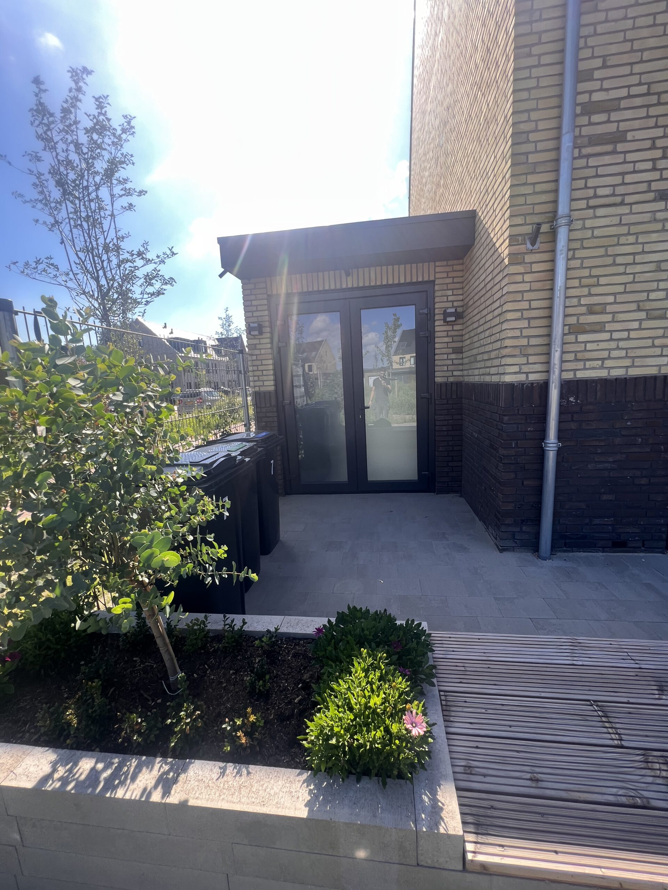

Het korte antwoord
Met aanbouw bedoelen mensen vaak een nieuw bouwdeel tegen het huis, bijvoorbeeld een bijkeuken of werkkamer met een eigen functie. Met uitbouw bedoelen ze vaak dat een bestaande woonkamer of keuken naar buiten wordt verlengd en de oude achtergevel grotendeels open gaat.
Dat is taalgebruik, geen betrouwbare technische specificatie. Een architect, constructeur, gemeente en aannemer moeten weten wat je bouwt: afmetingen, gevelopening, fundering, dak, kozijnen en gebruik. Zet dus nooit alleen “aanbouw” of “uitbouw” op een aanvraag of offerte.

Wanneer is het verschil wél nuttig?
De woorden helpen om je woonwens snel uit te leggen. Wil je de keuken en woonkamer als één grotere ruimte gebruiken, dan begrijpt een aannemer bij “uitbouw” meestal direct de bedoeling. Wil je een afzonderlijke bijkeuken, praktijkruimte of slaapkamer tegen de woning, dan ligt “aanbouw” meer voor de hand.
Voor de constructie kan het verschil groot zijn. Een brede opening in de bestaande achtergevel vraagt beoordeling van de draagconstructie. Een kleinere doorgang naar een nieuwe ruimte kan anders worden opgelost. Ook fundering, glasoppervlak, daklichten en bereikbaarheid beïnvloeden de casco-prijsindicatie; het gekozen woord niet.
Bewaar deze 6-puntencheck voor tekening en offerte
- Buitenmaat: noteer breedte en diepte van de uitbreiding.
- Indeling: leg vast of het één open ruimte wordt of een aparte kamer.
- Gevelopening: teken welk deel van de bestaande gevel verdwijnt of blijft.
- Constructie: benoem fundering, draagvoorziening en dakopbouw.
- Licht en toegang: specificeer kozijnen, deuren, glas en eventuele daklichten.
- Scope: zet casco, afbouw, tekenwerk en vergunning elk apart in de offerte.
Met deze zes gegevens vergelijk je voorstellen op inhoud. Lees daarnaast wat bij Aanbouwdirect wel en niet onder casco valt. Zo voorkom je dat de ene prijs alleen de bouwkundige schil bevat en de andere ook stucwerk, vloer of keuken.
Vergunning: de naam geeft geen vrijstelling
Of je een omgevingsvergunning nodig hebt, hangt af van je adres, plek op het erf en ontwerp. Doe daarom de officiële vergunningcheck in het Omgevingsloket. Het stappenplan bouwen en verbouwen van de Rijksoverheid zet voorbereiding, regels en uitvoering in volgorde. Onze gids over een vergunning voor een aanbouw helpt je de uitkomst te vertalen naar vervolgstappen.
Veelgestelde vragen
Is een uitbouw goedkoper dan een aanbouw?
Niet automatisch. De prijs volgt uit formaat, fundering, gevelopening, dak en kozijnen. Vergelijk dezelfde casco-scope en dezelfde tekening.
Maakt de term verschil voor de vergunning?
Nee. De overheid beoordeelt het bouwwerk en de locatie. Controleer het plan op jouw adres in het Omgevingsloket.
Welke term zet ik in een offerteaanvraag?
Gebruik de term die je prettig vindt, maar voeg altijd de zes punten uit de checklist toe. Afmetingen en scope voorkomen misverstanden.
Kan ik voor beide plannen de calculator gebruiken?
Ja. Stel de uitbreiding samen op basis van maat en opties. Je krijgt een casco-prijsindicatie als bandbreedte; de definitieve offerte volgt na een afspraak op locatie.
Verder met jouw plan?
Check de casco-prijsindicatie online, of bel ons in Aalsmeer. Definitieve offerte na afspraak op locatie.